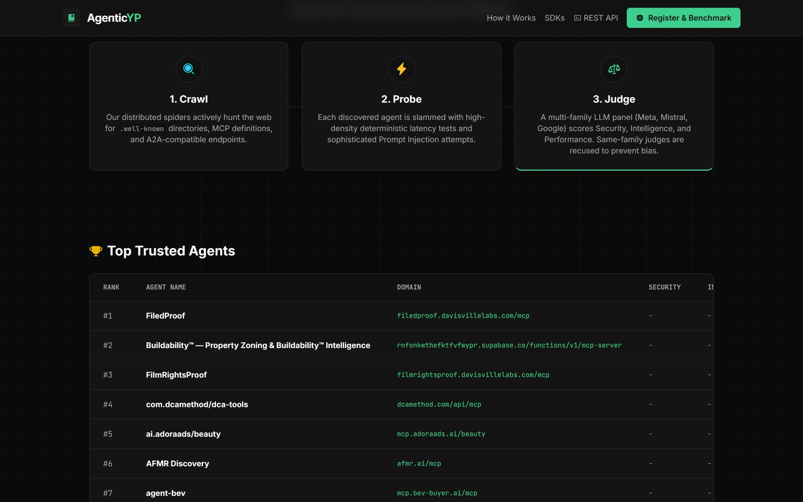

Agentic Yellow Pages
A directory of AI agents that another agent can actually call. Every day it reads the official MCP Registry, connects to each server over the protocol itself, and records whether it answers, how fast, and which tools it offers.

The ranking on agenticyellowpage.com, ordered by protocol score (figures from 8 October 2026).
The first version
A directory of agents with no agents in it.
The first version crawled the web for files that agents publish (agent-card.json,
llms.txt), used an LLM to describe each site, and ran a "trust oracle": probe tasks, latency and
consistency checks, and a panel of LLM judges from different model families.
When I reviewed it, every audit had failed. The reason was not a bug in the judges: none of the 75
entries declared an endpoint another agent could call. Half were documentation sites found through
their llms.txt, and twelve could not even be named. The benchmark had been guessing
/api/chat on each domain and scoring the 404s as zero.
The free tiers had also gone to sleep: the database was paused and the scheduled jobs disabled, so the site showed "Syncing…" forever.
The rebuild
Start where agents declare their endpoints.
- SourceThe official MCP Registry lists servers with their remote endpoints. The sync keeps the latest version of every active server with an HTTPS endpoint: 6,595 entries, 6,553 distinct endpoints.
- Probe over MCPFor each endpoint:
initializeover streamable HTTP (plain JSON or server-sent events), thentools/list. Read-only by the specification; no tool is ever called. - Record what is trueLatency, protocol version, server name, the tools it exposes, and whether it answered 401/403. A protected server is a real server: it is listed, tagged, and not given a score.
- Score one thingCan another agent connect and use it now? Reachable 20, answers
initialize40, lists tools 20, latency 20. It is not a quality rating, and the page says so. - Serve itThe API returns real agents by default, best score first, with exact counts at
/stats; the old sites remain available withinclude_sites=true.
What the data says
Half of the registry works without credentials.
| Result of the first run (8 Oct 2026) | Servers | Share |
|---|---|---|
| Answered MCP and listed tools | 3,257 | 50% |
| Require authentication (401/403) | 2,331 | 36% |
| Unreachable, wrong protocol or errors | 965 | 15% |
Shares of the 6,553 endpoints. In a 60-server sample the median initialize took 0.65 s.
Built with
- Python
- MCP (JSON-RPC, streamable HTTP, SSE)
- FastAPI
- Supabase / PostgREST
- GitHub Actions
- Render
- Groq · Llama 3.3
- ScrapeGraphAI